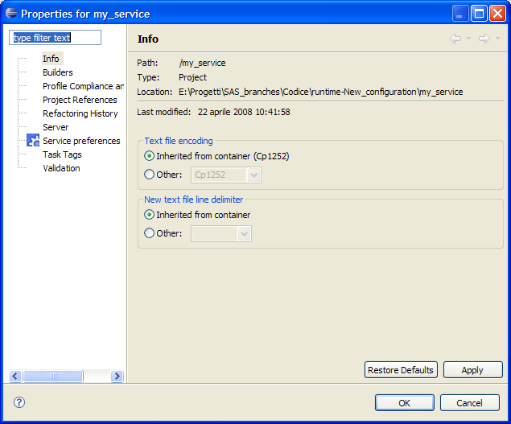

In order to update the service configuration, you have to select the service and right click on it. Select the "Properties" menu item. The below dialog is shown:

Select "Service preferences" in order to display the preferences page. The figure below shows such page:
This page let you change those information set during service creation. For more information about the meaning of these field, see here.